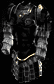

不朽之王的意志
復仇者之盔
Immortal King's Will
Avenger Guard
防禦:
160-175
(變動)
(基本防禦: 35-50)
需要等級: 47
需要力量: 65
耐久度: 55
(限野蠻人)
+4 照亮範圍
+125 防禦
37% 額外的金錢從怪物身上取得
25-40%
更佳的機會取得魔法裝備 (變動)
+2 戰嚎 (限野蠻人)
有凹槽 (2)
部分套裝加成
+50 攻擊準確率 (2 件)
額外 +75 攻擊準確率 (3 件)
額外 +125 攻擊準確率 (4 件)
額外 +200 攻擊準確率 (5 件)
完整套裝加成
+3 野蠻人技能
+450 攻擊準確率
+150 生命
所有抗性 +50
法術傷害減少 10
顯示靈氣

不朽之王的碎魂者
食人魔之錘
Immortal King's Stone Crusher
Ogre Maul
傷害: 231
- 318 (平均傷害274.5)
需要等級: 76
需要力量: 225
武器基本速度: [10]
+200% 增強傷害
+200% 對抗惡魔的傷害
+250% 對抗不死生物的傷害
40% 提升攻擊速度
不可破壞
35-40% 壓碎性打擊 (變動)
有凹槽 (2)
增加 211-397 火焰傷害 (2 件)
增加 7-477 閃電傷害 (3 件)
增加 127-364 冰冷傷害持續 6 秒 (普通) (4 件)
+204 毒素傷害持續 6 秒 (5 件)
增加 250-361 魔法傷害 (完整套裝)

不朽之王的靈魂牢籠
神聖盔甲
Immortal King's Soul Cage
Sacred Armor
防禦:
1001
(基本防禦: 487-600)
防禦: 1301
(基本防禦: 487-600)
需要等級: 76
需要力量: 232
耐久度: 60
+400 防禦
受到攻擊時有 5% 機率施展等級 5 強化
抗毒 +50%
+2 戰鬥技能 (限野蠻人)
+25%快速打擊恢復 (2 件)
抗寒 +40% (3 件)
抗火 +40% (4 件)
抗電 +40% (5 件)
+50% 增強防禦 (完整套裝)

不朽之王的瑣事
巨戰腰帶
Immortal King's Detail
War Belt
防禦: 89
(基本防禦: 41-52)
防禦: 194 (基本防禦: 41-52)
防禦: 247 (基本防禦 41-52)
需要等級: 29
需要力量: 110
耐久度: 24
16 格
+36 防禦
抗電 +31%
抗火 +28%
+25 力量
+105 防禦 (2 件)
+25% 快速打擊恢復 (3 件)
+100% 增強防禦 (4 件)
傷害減少 20% (5 件)
+2 支配系 (限野蠻人)
(完整套裝)

不朽之王的融爐
巨戰手套
Immortal King's Forge
War Gauntlets
防禦: 108-118
(變動)(基本防禦: 43-53)
防禦: 228-238 (變動)(基本防禦: 43-53)
需要等級: 30
需要力量: 110
耐久度: 24
+65 防禦
被攻擊時有 12% 機率發動等級 4 充能彈
+20 敏捷
+20 力量
+25% 提升攻擊速度 (2 件)
+120 防禦 (3 件)
10% 生命於擊中時偷取 (4 件)
10% 法力於擊中時偷取 (5 件)
凍結目標 +2 (完整套裝)

不朽之王之柱
巨戰之靴
Immortal King's Pillar
War Boots
防禦:
118-128
(變動) (基本防禦: 43-53)
防禦: 278-288
(變動)
(基本防禦: 43-53)
需要等級: 31
需要力量: 125
耐久度: 24
刺客踢擊傷害: 39-80
+75 防禦
40% 快速跑步/行走
+110 攻擊準確率
+44 生命
25% 更佳的機會取得魔法裝備 (2 件)
+2 戰鬥技能 (限野蠻人) (3 件)
+160 防禦 (4 件)
冰凍時間減半 (5 件)